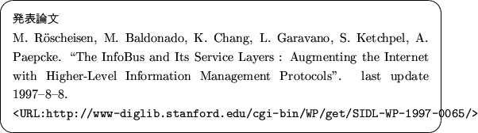

Next: Introduction
1998�$BG/�(B11�$B7n�(B25�$BF|�(B
�$BCN<1%7%9%F%`O@�(BII�$B!JCN<11~MQ%7%9%F%`!K�(B
98513 �$B9b5W2m@8�(B
InfoBus�$B$H$=$N%5!<%S%9AX!'�(B
�$B9bpJs4IM}%W%m%H%3%k$G%$%s%?%M%C%H$r3HD%$9$k�(B
}
\end{screen}">
Masao Takaku
�$BJ?@.�(B11�$BG/�(B3�$B7n�(B12�$BF|�(B